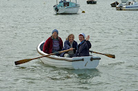

{kind=link}
Relationships change as people change -- well, we all know that -- but there's something about a close relationship with someone who is living with dementia that feels quite frighteningly unstable. You discover how the faculty of memory ballasts the most everyday interactions. You both know, you assume, that the reason
you’re both rather achy and therefore grumpy is that you’ve just returned from
walking too long in the sun. But, if the fact of the walk has vanished from
one mind, only the grumpiness remains and that can be disconcerting. You may think that it's animosity when it's no more than fatigue. One
mind must do the remembering for both.
It is not that impaired mind is empty when it has lost its memory-ballast. Quite the contrary, it’s likely to be overly full – of anxiety and confusion and fear. If
you’ve ever tried to climb into a dinghy that is wallowing full of water (of
course not, you would bale it first), you will have felt how suddenly and how
dangerously it will lurch. One of the things I have learned – at least in
theory – is that Mum’s emotions can change in a flash and the approach that was
right this morning (or two minutes ago) may be completely off-beam now.
I can only claim that I have learned this in theory
because I realise now that I find it very difficult to change my own habits of
behaviour. Currently I am trying to slow down, to reduce my instinct for
activity and accept that one topic and one only is enough. It’s not straightforward.
Yesterday I thought I was managing rather well to stick with a copy of The New National Songbook and nothing
else for almost two hours but when we came to lunch Mum really couldn’t eat as the
confusion was too great between plate and book. You wouldn’t want to eat a songbook, would you?
Let's pause and have a song instead. It's not in the National Songbook, my friend Claudia Myatt composed this as a reflection on the evenings she spends every week with my mother. It's lovely, please do share.
| Sisters - Joyce and Margery Allingham |
{kind=link}
As I am thinking about this blogpost the print copies of Beloved Old Age have arrived, pending
publication on June 30th the 50th anniversary of Margery Allingham’s deathday. The kindle edition is up, but there is something about
the finality of seeing your words in print … When the paper proof arrived last week Mum and I were having
an especially bad period and I sat up late that night in her flat, reading the
text, urgently needing to reassure myself that at no point did I sound as if I
thought I had this caring situation cracked. Uncertainty is now the single thing
about which I am perfectly certain.
So why write it? Or why publish? Because writing helps – and reading other
people’s writing helps even more. Beloved Old Age is only partly mine and Mum's: the solid core is Margery Allingham’s The Relay written half a century ago. The Relay was her last completed book, never previously published. I'm gripping it, white-knuckled.
Perhaps also, there is something so
extraordinary about observing the deconstructive activity of dementia that it
triggers an impulse to respond in some way? It was a wonderful moment recently when my friend Nicci Gerrard won an Orwell Prize for her very fine article
about Dementia and the Arts: Words Fail Us. There’s a paradox here. Nicci’s own words are so
carefully selected and so potent. Her imagery through all her recent writing and speaking about dementia sticks in the mind. It is the people who are living with dementia
who are so badly failed by language. I can think of no more graphic illustration
of this than Valerie Laws’s poetry installation, The Incredible Shrinking Brain.
Today I am going to resolve to stay glad that I have committed this moment to print. If later on I need to block words and tear out pages, well so be it. Beloved Old Age is a snapshot of Now as Allingham’s Relay bequeathed us a portrait of Then.
 |
| Snapshot of a moment that has gone: June, Julia, Claudia September 2012 |
{kind=link}